땀과 웃음으로 하나 된 대구수성노회, 시찰별 체육대회 열렸다
대구수성노회 면려부 주최로 동신교회 체육관에서 열린 체육대회에서 장로와 목사가 한데 어우러져 경기와 식사, 담소로 하루를 함께 보내며 대구수성노회의 하나됨을 확인했다.
대구수성노회(노회장 이정근 목사) 시찰별 체육대회가 2026년 10월 7일(수) 대구 동신교회 체육관에서 열렸다. 대구수성노회 면려부(부장 라아론 목사, 서기 이지훈 목사)가 주최한 이날 행사에는 각 시찰 소속 목사와 장로들이 명찰을 달고 모여, 평소 회의 자리에서 만나던 얼굴들과 직분의 경계를 넘어 땀 흘리며 어울렸다.
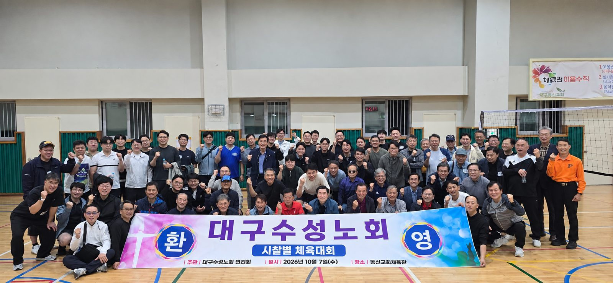
체육관 가득 채운 목회자들, 현수막부터 ‘환영’
체육관 한쪽에는 ‘대구수성노회 환영’이라는 글귀와 함께 ‘시찰별 체육대회’라는 행사명이 적힌 현수막이 걸렸다. 현수막에는 주관이 대구수성노회 면려회, 일시가 2026년 10월 7일(수), 장소가 동신교회체육관이라고 안내돼 있었다. 개회 전부터 참가자들은 서로의 이름표를 확인하며 인사를 나눴고, 단체 기념촬영에서는 앞줄과 뒷줄 할 것 없이 환한 표정으로 주먹을 불끈 쥐어 보였다.
행사를 준비한 면려부에서는 부장 라아론 목사(대구북성교회)와 서기 이지훈 목사(범어교회)가 현장에서 함께 뛰었다. 각자 가슴에 이름표를 붙인 채 선수와 응원단으로 번갈아 나선 덕분에, 처음 만나는 동료도 금세 말을 트는 분위기가 이어졌다.
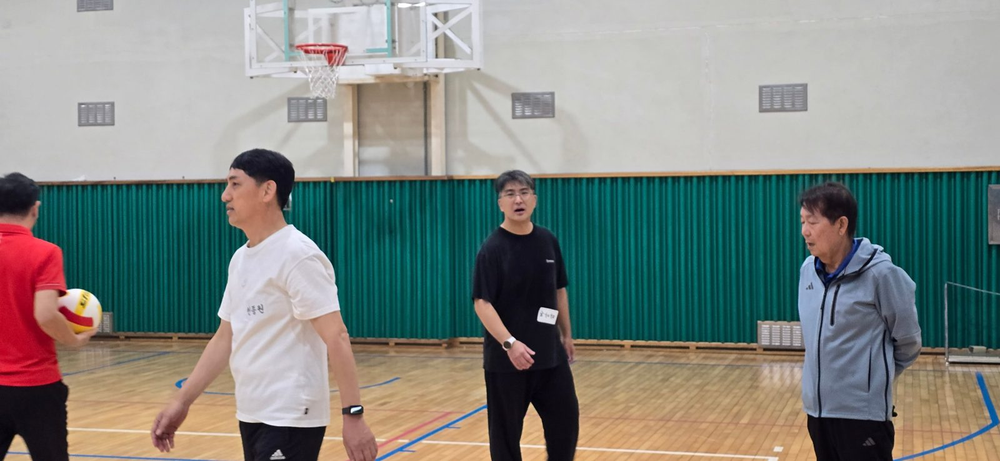
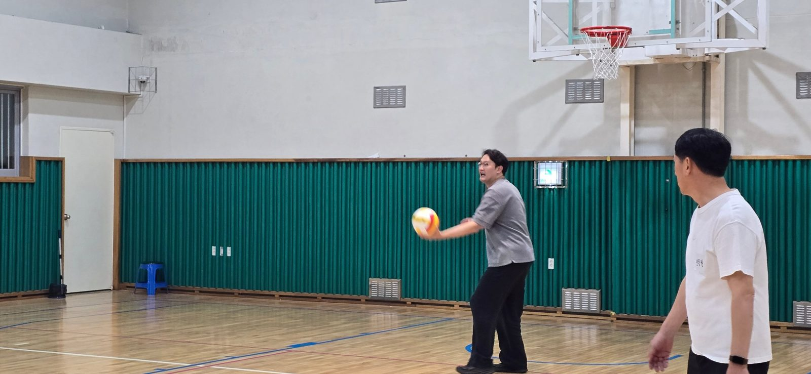
네트 앞의 진지함과 웃음
코트에서는 네트를 사이에 두고 공을 주고받는 경기가 이어졌다. 참가자들은 점수판 숫자가 넘어갈 때마다 환호했고, 공을 놓쳐도 웃음으로 넘기며 서로를 격려했다. 연배와 직분을 떠나 한 팀이 된 목회자들은 공이 오갈 때마다 목소리를 높였다.
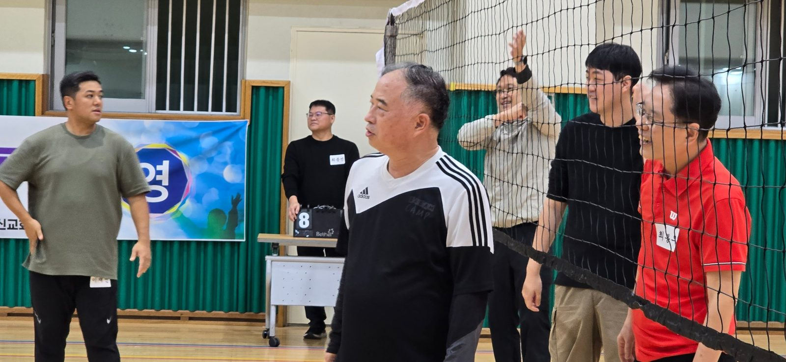
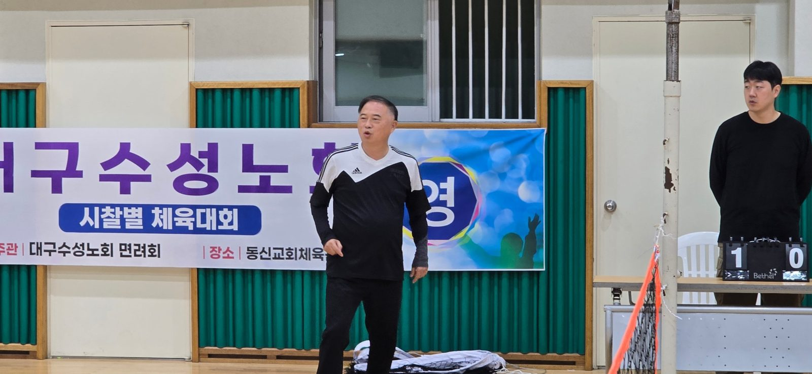
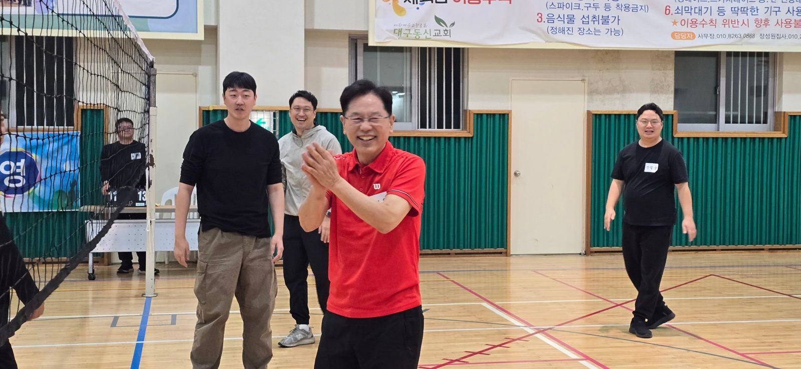
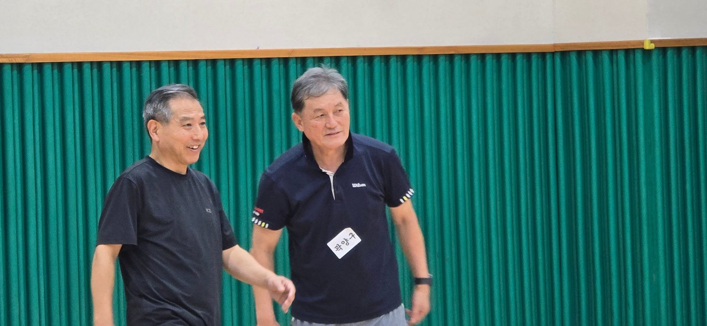
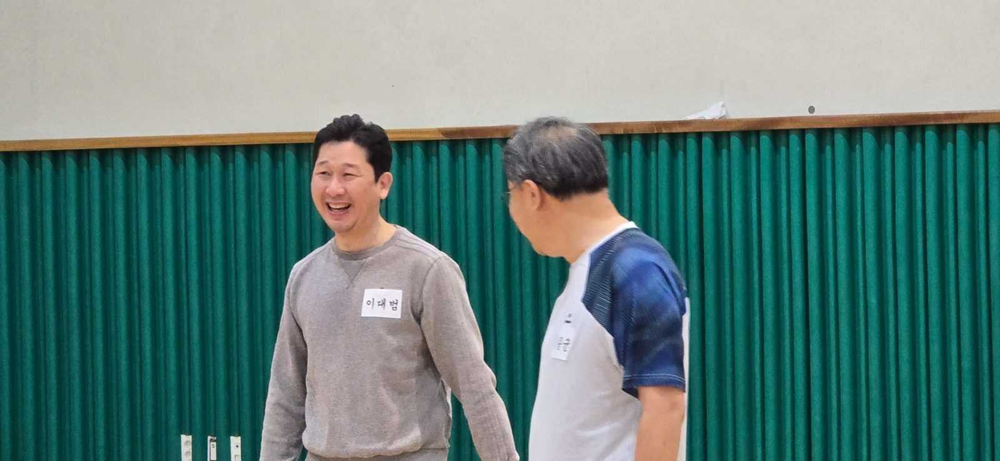
코트 안팎에서 이어진 웃음과 교제
경기에 나서지 않은 참가자들은 의자에 앉아 간식을 나누며 응원에 나섰다. 상자째 놓인 귤과 과자, 생수를 사이에 두고 둘러앉은 이들은 손하트와 손 인사로 서로를 반겼다. 간식 테이블 곁에서는 엄지와 브이로 인사를 건네는 참가자들의 웃음소리가 이어졌다. 한쪽에서는 경기를 마친 참가자들이 숨을 고르며 담소를 나눴고, 또 한쪽에서는 이름표를 붙인 동료들끼리 스스럼없이 농담을 주고받았다.
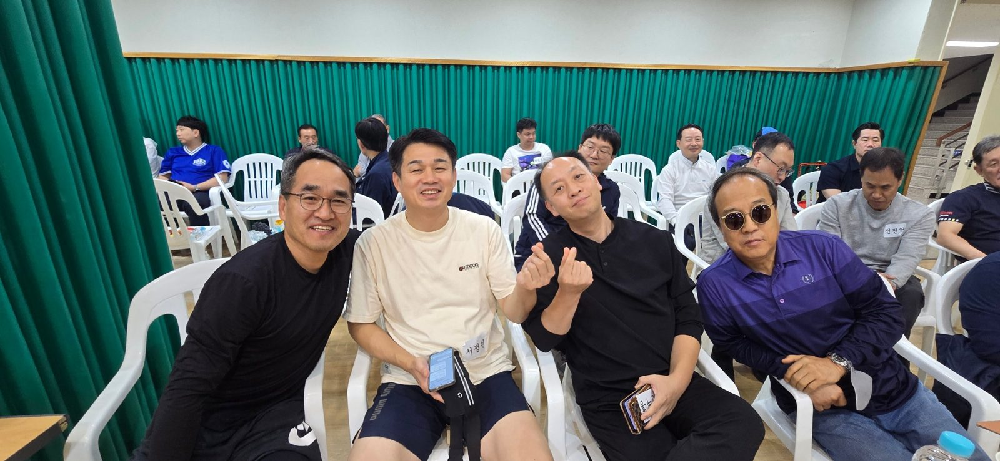
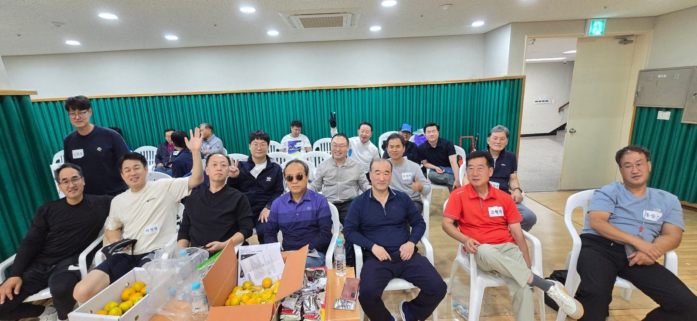
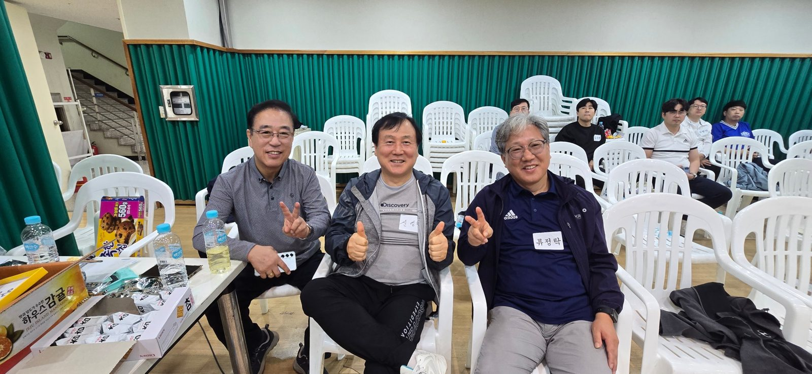
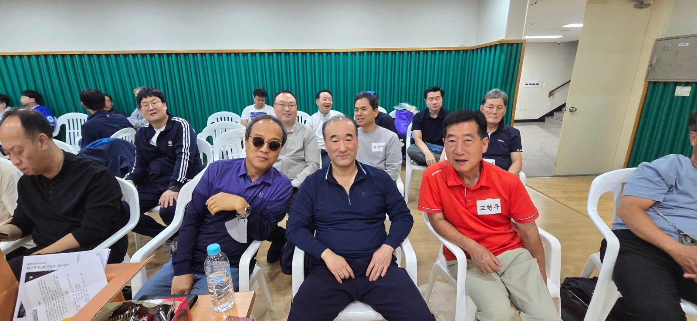
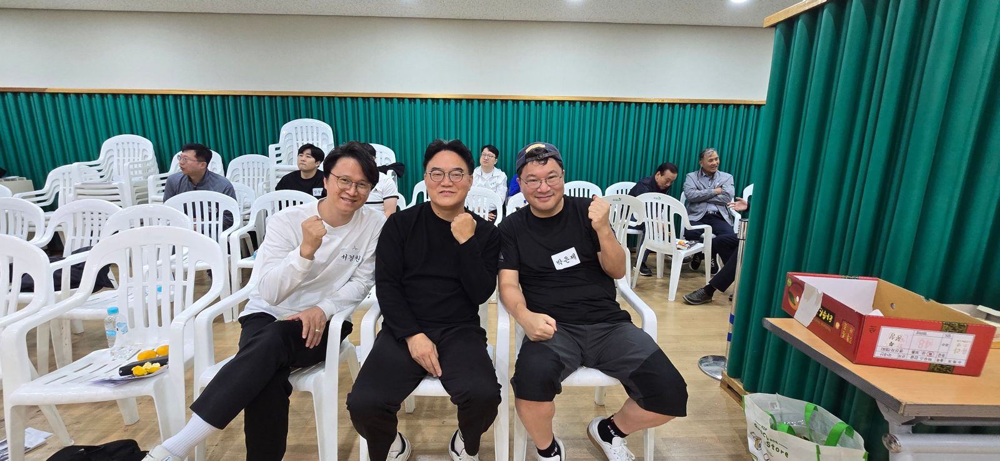
장로와 목사, 직분을 넘어 하나로
이날 체육관에서 가장 눈에 띈 것은 직분의 경계가 흐려진 풍경이었다. 장로와 목사가 같은 코트에서 공을 주고받고, 같은 관람석에서 간식을 나누며 서로를 응원했다. 노회 석상에서 안건을 두고 마주하던 이들이 이름표 하나만 단 채 한 팀의 동료가 됐다.
노회는 목사와 장로가 함께 구성하는 치리회다. 이날의 체육관은 그 어우러짐이 회의장에만 머무르지 않고 삶의 자리에서도 이어질 수 있음을 보여 주었다. 시찰은 달라도, 직분은 달라도 웃음은 하나였고, 사진 속 얼굴들이 그 하나됨을 고스란히 증언한다.
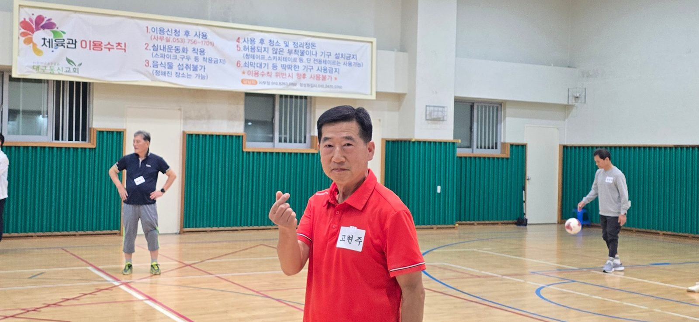
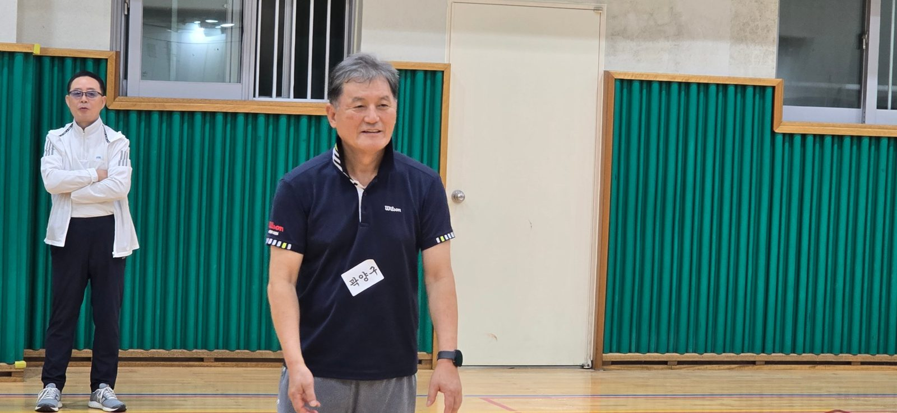
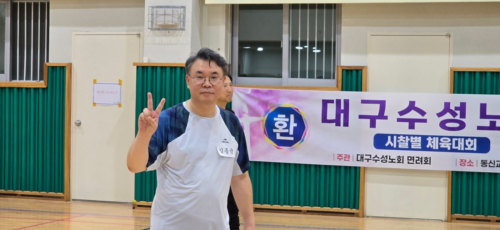
식탁과 찻잔 위로 이어진 교제
경기를 마친 참가자들은 인근 식당으로 자리를 옮겨 함께 저녁 식사를 했다. 중시찰 식사 자리에서는 아멘교회 원로목사 최봉우 목사가 앞에 서서 식사 기도를 인도하자 식탁에 둘러앉은 이들이 고개를 숙이고 마음을 모았다. 땀 흘린 하루를 감사로 마무리하는 시간이었다.
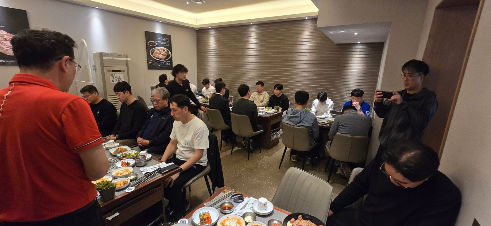
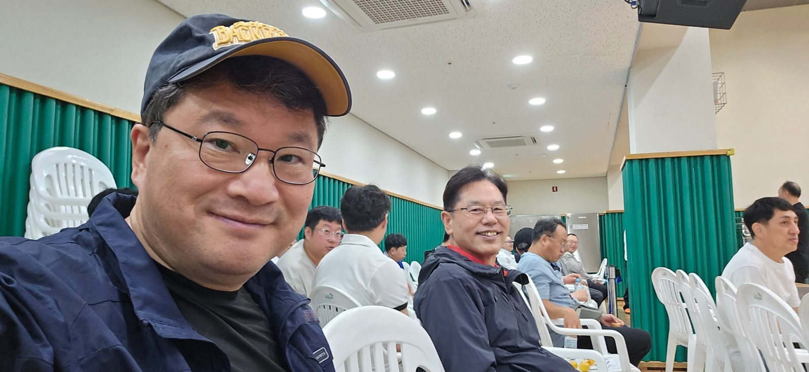
식사 후에는 카페로 이동해 이야기꽃을 피웠다. 중시찰과 동시찰 목회자들은 긴 탁자에 둘러앉아 커피와 음료를 앞에 두고 목회 현장의 이야기와 안부를 나눴고, 단체 사진을 찍을 때는 손을 흔들고 손하트를 만들며 마지막까지 웃음이 끊이지 않았다.
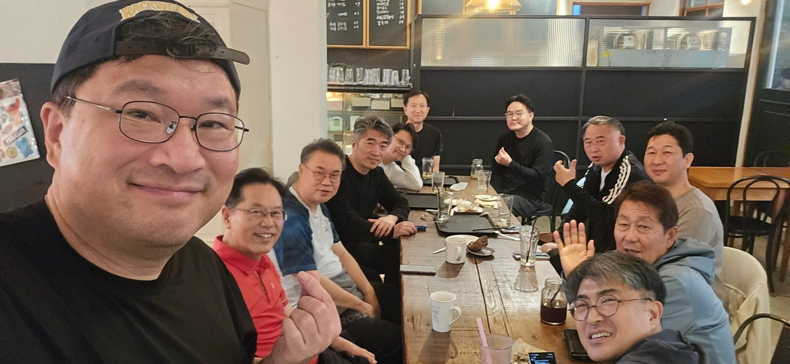
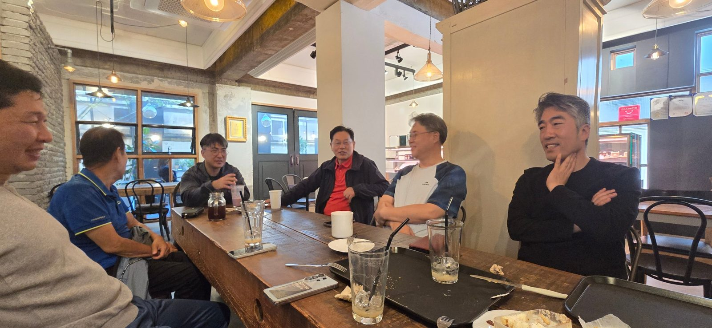
하나 된 노회, 건강한 교제가 힘
이번 체육대회는 시찰이라는 울타리와 직분의 구분을 넘어 노회 구성원들이 몸으로 부대끼며 가까워지는 자리가 됐다. 동시찰, 중시찰, 남시찰 회원들이 경기장에서는 응원으로, 식탁에서는 기도로, 카페에서는 담소로 이어지며 ‘함께 걷는 노회’의 모습이 현장 곳곳에 드러났다.
면려부를 중심으로 마련된 이번 행사는 교회 현장에서 애쓰는 목사와 장로들에게 쉼과 격려를 나누는 시간이기도 했다. 참가자들은 사진 속 표정처럼 환한 얼굴로 헤어졌고, 장로와 목사가 어우러진 이 하루는 대구수성노회의 하나됨이 회의장과 각자의 교회에서도 이어지기를 바라게 했다.